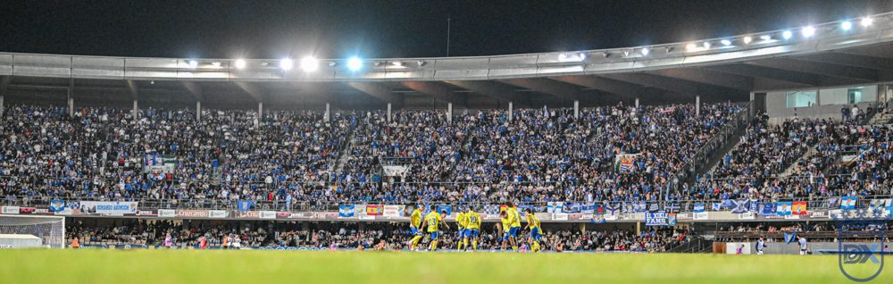

Una afición que ha madurado desde el barro

Foto: Diario XerecistaLos aficionados del Xerez demostraron ante el Cádiz que son una afición ejemplar, forjada en años de sufrimiento.
Ayer los verdaderos aficionados de Jerez demostraron que son una afición ejemplar. Después de años de sufrimientos, de incertidumbre, demostró estar a la altura de una afición de Primera División.
Lo primero, no hubo incidentes, y eso hace ver que la afición del Xerez ha madurado: que dentro del campo se dice de todo, sí, pero que cuando sale cada uno se pueda ir a su casa. Ayer había muchos niños con caras de expectación, porque nunca habían vivido algo así.
De Los Cortijillos a un Chapín lleno
Esa madurez no ha llegado sola. Se ha ganado en campos como Los Cortijillos o La Bazán, lejos de los grandes estadios, en tardes en las que el xerecista viajaba por su equipo sin pedir nada a cambio. Esos campos hacen madurar a una afición y le enseñan a valorar todavía más a su equipo. Quien ha estado allí sabe lo que vale una noche como la de ayer.
Ahora, el próximo gran desplazamiento que recibiremos será el de la gente del Recre, que vendrán más, y volveremos a ser una afición señora. Y espero que con un estadio igual de lleno que ayer.
🇬🇧 Read in English ← Volver a la portada